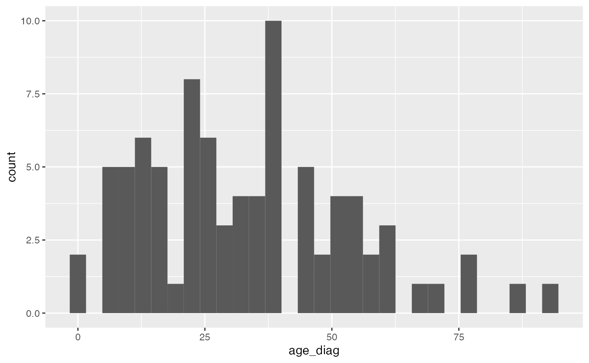

CDM reference backends
Source:vignettes/a05_cdm_reference_backends.Rmd
a05_cdm_reference_backends.RmdOverview
The CDMConnector package allows us to work with cdm data in different
locations consistently. The cdm_reference may be to tables
in a database, files on disk, or tables loaded into R. This allows
computation to take place wherever is most convenient.
Here we have a schematic of how CDMConnector can be used to create
cdm_references to different locations.

Example
To show how this can work (and slightly overcomplicate things to show different options), let´s say we want to create a histogram with age of patients at diagnosis of tear of meniscus of knee (concept_id of “4035415”). We can start in the database and, after loading the required packages, subset our person table people to only include those people in the condition_occurrence table with condition_concept_id “4035415”
con <- DBI::dbConnect(duckdb::duckdb(), dbdir = eunomia_dir())
cdm <- cdm_from_con(con, cdm_schema = "main")
# first filter to only those with condition_concept_id "4035415"
cdm$condition_occurrence %>% tally()
#> # Source: SQL [1 x 1]
#> # Database: DuckDB 0.8.0 [root@Darwin 21.6.0:R 4.2.2//var/folders/xx/01v98b6546ldnm1rg1_bvk000000gn/T//Rtmp9mi5Zv/nnoliemv]
#> n
#> <dbl>
#> 1 65332
cdm$condition_occurrence <- cdm$condition_occurrence %>%
filter(condition_concept_id == "4035415") %>%
select(person_id, condition_start_date)
cdm$condition_occurrence %>% tally()
#> # Source: SQL [1 x 1]
#> # Database: DuckDB 0.8.0 [root@Darwin 21.6.0:R 4.2.2//var/folders/xx/01v98b6546ldnm1rg1_bvk000000gn/T//Rtmp9mi5Zv/nnoliemv]
#> n
#> <dbl>
#> 1 83
# then left_join person table
cdm$person %>% tally()
#> # Source: SQL [1 x 1]
#> # Database: DuckDB 0.8.0 [root@Darwin 21.6.0:R 4.2.2//var/folders/xx/01v98b6546ldnm1rg1_bvk000000gn/T//Rtmp9mi5Zv/nnoliemv]
#> n
#> <dbl>
#> 1 2694
cdm$person <- cdm$condition_occurrence %>%
select(person_id) %>%
left_join(select(cdm$person, person_id, year_of_birth), by = "person_id")
cdm$person %>% tally()
#> # Source: SQL [1 x 1]
#> # Database: DuckDB 0.8.0 [root@Darwin 21.6.0:R 4.2.2//var/folders/xx/01v98b6546ldnm1rg1_bvk000000gn/T//Rtmp9mi5Zv/nnoliemv]
#> n
#> <dbl>
#> 1 83We can save these tables to file
dOut <- tempfile()
dir.create(dOut)
CDMConnector::stow(cdm, dOut, format = "parquet")And now we can create a cdm_reference to the files
cdm_arrow <- cdm_from_files(dOut, as_data_frame = FALSE)
cdm_arrow$person %>%
nrow()
#> [1] 83
cdm_arrow$condition_occurrence %>%
nrow()
#> [1] 83And create an age at diagnosis variable
cdm_arrow$result <- cdm_arrow$person %>%
left_join(cdm_arrow$condition_occurrence, by = "person_id") %>%
mutate(age_diag = year(condition_start_date) - year_of_birth)We can then bring in this result to R and make the histogram
result <- cdm_arrow$result %>%
collect()
str(result)
#> tibble [85 × 4] (S3: tbl_df/tbl/data.frame)
#> $ person_id : num [1:85] 430 458 372 452 165 459 99 66 161 145 ...
#> $ year_of_birth : num [1:85] 1931 1972 1961 1962 1968 ...
#> $ condition_start_date: Date[1:85], format: "1997-12-05" "2010-06-25" ...
#> $ age_diag : num [1:85] 66 38 57 51 45 14 10 58 39 25 ...
result %>%
ggplot(aes(age_diag)) +
geom_histogram()
DBI::dbDisconnect(con, shutdown = TRUE)